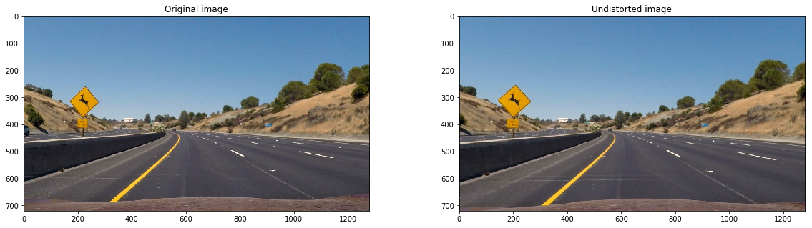
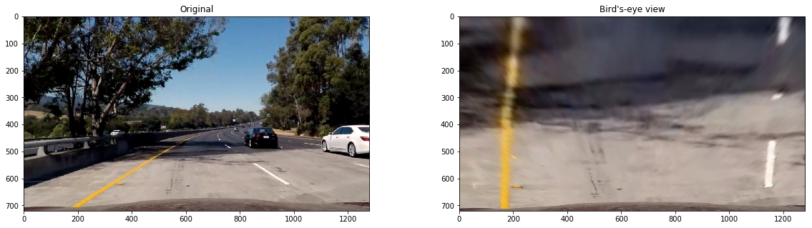

The logic for camera calibration and undistortion is implemented in the camera class in the first cell of the Jupyter notebook.
The LaneCamera.calibrate() method takes in calibration images and a Chessboard object for camera calibration. When instantiated with its appropriate parameters, the chessboard object generates an object point array. the calibrate() method iterates through all the calibration images and detects the chessboard corners in that image, it then appends the corners to an img_points array. It then runs cv2.calibrateCamera() to compute our camera matrix and distortion coefficients, it also stores these as properties of our LaneCamera object. I have implemented methods in LaneCamera that allows the user to save, load or set custom camera matrix and distortion coefficient values. Saving and loading precomputed camera calibration data greatly increased testing efficiency.
The LaneCamera._undistort() method undistorts a given image, it is preceded by an underscore because it shouldn’t explicitly be called during the pipeline since all of the higher level processing method (such as birds_eye_view) call it before doing their processing.
Here is a before and after of image undistortion:

Using the birds-eye view method of LaneCamera we can get a top down view of the road. The source and destination points are computed by choosing a margin from the 2/3rd of the image in height and a margin from the middle of the image in width. This allows us to easily choose sensical points without blindly trying perspective transform points for hours (which I have done before). The result of both our undistortion and our perspective transform can be seen in this figure:

Using a combination of edge gradient thresholding and color thresholding, I was able to isolate the lane lines in the image.
The implementation can be found in the Lane Isolation section in the thresholder function.
The isolation system thresholds the edge gradients (found through a Sobel filter) in the x direction between 22 and 105 and a saturation threshold between 148 to 255 in HLS color space to better isolate the yellow line. Combining both generated binary bitmaps gives us a decent result for lane detection.
This part of the process is the hardest and is also the pain point of the entire system as a whole. It is brittle and will not withstand lighting, saturation, color or camera changes well. An end to end (or sliding window with classifier for faster processing) machine learning approach using a fully convolutional neural network would make this infinitely better.
Here is the result of lane isolation on all the test images:
![lane isolation][img/lane_isolation.png]
The lane detection first looks at the histogram peaks in order to place the first window where the process will look for lanes. Looking at the histogram of a test image, we can see that peaks are very useful at detecting lanes.
![histogram][img/histogram.png]
Once the first two windows are placed by finding a histogram peak at the left and right side of the image, we can start adding windows on top of the first placed windows and recentering them on the center of the isolated pixels in that region. Doing so allows us to classify the left and right side lane pixels. All of this is implemented in the lane_finder function.
By taking the arrays of detected left lane and right lane pixels from step 3, we can fit a polynomial that best goes through all those points. This process is implemented twice, once at the end of the lane_finder function where it is fitted in terms of pixels, and another time in the curvature function where it is implemented in terms of meters.
By taking the left and right lane polynomials we can create an array of vertices (x,y points along the shape) and fill the polygon bounded by those points. The trick here is to flip vertically one of the matrices so that the vertices are continuous in terms of y, that is, going up in value and back down.
We can use the inverse of the projection matrix used by the birds eye view method and transform the lane pixels and polygon back onto the input image.
By transforming the (x, y) coordinates of the detected lane line pixels into meters we can compute the curvature by fitting a polynomial on those new values. The curvature can then be computed using the equation derived by finding the second derivative of a 2nd degree polynomial function in the Lane Detection & Curvature + Offset section.
The offset is simply the offset of the image from the center of the lane, all transformed in meters.
Putting all of the 7 steps together, the pipeline can be resumed in one figure:
![pipeline][img/pipeline.png]
Here’s a link to my video result
We can smooth out the line by taking the average of the few past lines before. We can also verify that the lane makes sense by using a few metrics, in my case I used area and change from previous lane, if the new lane’s area value does not make sense or it’s line positions is far from the last detected lane lines, the new lane values are discarded. All of this is implemented in the LaneSmoother class.
We can create a video by passing each frame to the still images pipeline and using the smoothing system mentioned above.
My video pipeline is not great. The smoothing helps average out errors but the detection process keeps fitting to noisy detections half of the time. The lane isolation pipeline is very sensitive to lighting, colour and camera parameters. The birds eye view may not work on non-flat road conditions and is sensitive to camera position on the car. Not to mention the entire thing is absurdly slow, 2.5 fps slow.
To make my lane detection system better, a lot can be done.